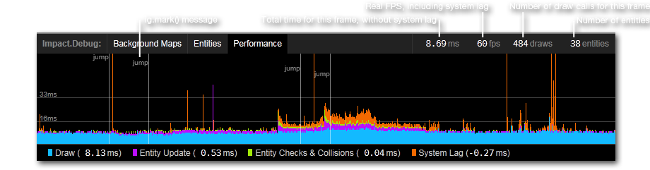

Generated: 2013-04-01
Impact, since version 1.18, features some advanced debug facilities that help you see what's going on at every moment of your game.
The debug menu and its functions can be enabled by simply requiring the impact.debug.debug module in your code. E.g. in your main.js file:
ig.module(
'game.main'
)
.requires(
'impact.game',
'impact.font',
'impact.debug.debug' // <- Add this
)
.defines(function(){
…
});
When the debug module is loaded, the debug menu will show up at the bottom of the game's page. By default, this menu has 3 panels (Background Maps, Entities and Performance), but you can add your panels for some game specific debug options.
The Performance Panel is probably the most useful one, but also needs a bit of explanation:
The two horizontal lines, marked 16ms and 33ms, illustrate two common frame rates for games. If you manage to stay under the 16ms mark, your game will run with 60 frames per second (1000ms / 60fps = 16.7ms); under 33ms it will still achieve 30 frame per second.
You can also see from this screenshot, that the actual drawing of the screen is easily the largest performance hog. Enabling the preRender mode for background maps dramatically improves this (you can also enable this from the Background Maps panel).
The System Lag metric is also very interesting. This is essentially the time the browser is late to begin processing the next frame. E.g. when the current frame is completely finished after 10ms, the browser should schedule the next frame in 6ms, in order to achieve 60fps.
However, some browser's JavaScript engines need a very long time to free unused memory ("Garbage Collection"), sometimes amounting to a complete halt of the game for 100ms or more. Sadly, there's little you, as a game developer, can do about this - other than complaining to browser vendors.
The ig Core has 4 debug message functions. However, these functions will only do something when the debug module is loaded. This is useful when you want to release your game - simply remove the debug module and all debug messages are gone.
An alias for the browser's console.assert(). It's safe to use this function even if the browser doesn't have the console object defined, like for IE9 without the developer tools.
An alias for the browser's console.log().
Adds or updates the number for name in the debug menu on the right. E.g. if you want to display the player's x velocity for each frame, do the following in your update() method:
// assuming #player# is an entity ig.show( 'x vel', player.vel.x.round() ); // round before output
Adds the msg to the performance graph at the current time. The optional color parameter accepts a CSS color string such as '#f0f'. If the performance panel is currently inactive, the message will be ignored.
You can add your own panels to the menu to have some more game specific debug options. For instance, if you want to be able to quickly enable and disable the collision detection for CollisionMaps, do this:
ig.module(
'game.my-collision-debug-panel'
)
.requires(
'impact.debug.menu',
'impact.collision-map'
)
.defines(function(){
// Overwrite the CollisionMap's trace method, to check for a custom flag
ig.CollisionMap.inject({
trace: function( x, y, vx, vy, objectWidth, objectHeight ) {
if( ig.CollisionMap._enabled ) {
// Just call the original trace method
return this.parent( x, y, vx, vy, objectWidth, objectHeight );
}
else {
// Return a dummy trace result, indicating that the object
// did not collide
return {
collision: {x: false, y: false},
pos: {x: x+vx, y: y+vy},
tile: {x: 0, y: 0}
};
}
}
});
// This is a 'static' property of ig.CollisionMap. It's not per instance.
ig.CollisionMap._enabled = true;
// Add a panel to the debug menu that allows us to toggle the _enabled flag
// for ig.CollisionMap
ig.debug.addPanel({
type: ig.DebugPanel,
name: 'collisionMap',
label: 'Collision Map',
// Toggle switches for this panel
options: [
{
name: 'Enable Collisions',
// When the toggle switch is clicked, it will flip the property
// value for the given object.
// In this case 'ig.CollisionMap._enabled'
object: ig.CollisionMap,
property: '_enabled'
}
]
});
});
This will create a new ig.DebugPanel with a toggle switch to Enable Collisions and adds it to the debug menu.
If you need more than just some simple toggle switches, you can also subclass your own panel class from ig.DebugPanel. E.g.:
ig.module(
'game.my-fancy-debug-panel'
)
.requires(
'impact.debug.menu',
'impact.entity',
'impact.game'
)
.defines(function(){
// Overwrite the Game's loadLevel() method to call a custom method
// on our panel, after the level is loaded
ig.Game.inject({
loadLevel: function( data ) {
this.parent(data);
// 'fancypanel' is the name we give this panel in the
// call to ig.debug.addPanel()
ig.debug.panels.fancypanel.load(this);
}
});
// Overwrite the Entity's update() method, so we can disable updating
// for a particular entity at a time
ig.Entity.inject({
_shouldUpdate: true,
update: function() {
if( this._shouldUpdate ) {
this.parent();
}
}
});
MyFancyDebugPanel = ig.DebugPanel.extend({
init: function( name, label ) {
// This creates the DIV container for this panel
this.parent( name, label );
// You may want to load and use jQuery here, instead of
// dealing with the DOM directly...
this.container.innerHTML =
'<em>Entities not loaded yet.</em>';
},
load: function( game ) {
// This function is called through the loadLevel() method
// we injected into ig.Game
// Clear this panel
this.container.innerHTML = '';
// Find all named entities and add an option to disable
// the movement and animation update for it
for( var i = 0; i < game.entities.length; i++ ) {
var ent = game.entities[i];
if( ent.name ) {
var opt = new ig.DebugOption( 'Entity ' + ent.name, ent, '_shouldUpdate' );
this.addOption( opt );
}
}
},
ready: function() {
// This function is automatically called when a new Game is created.
// ig.game is valid here!
},
beforeRun: function() {
// This function is automatically called BEFORE each frame
// is processed.
},
afterRun: function() {
// This function is automatically called AFTER each frame
// is processed.
}
});
ig.debug.addPanel({
type: MyFancyDebugPanel,
name: 'fancypanel',
label: 'Fancy Panel'
});
});